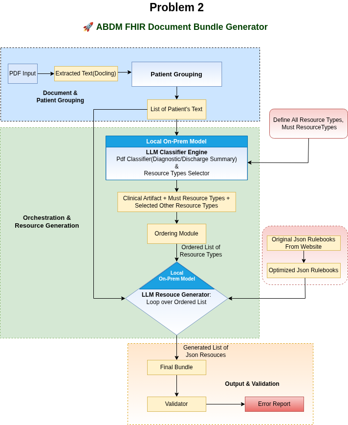

We designed and implemented a fully open-source, privacy-preserving, LLM-orchestrated pipeline that converts clinical PDFs (Diagnostic Reports and Discharge Summaries) into HL7 FHIR R4 Document Bundles compliant with ABDM / NHCX profiles.
This is not a simple extraction tool.
This is a structured, dependency-aware, rulebook-driven FHIR generation framework powered entirely by local Large Language Models — without using any paid APIs.
To ensure the highest standards of data sovereignty and privacy in healthcare, our solution operates entirely through on-premises microservices. The architecture runs fully offline and locally, eliminating the need for cloud LLM endpoints or external APIs. This local deployment ensures zero data leakage and full health data sovereignty, directly aligning with the Digital Personal Data Protection (DPDP) Act requirements for secure and compliant processing*. To manage the complexity of multi-page documents, we use a pre-processing stage called “Patient Grouping”. This process uses Docling to extract text and then intelligently groups patients based on identifying attributes such as age, gender, and laboratory collection details. By organizing document content into patient-specific segments before extraction, the system prevents cross-patient data mixing, improves structural clarity, and ensures accurate resource generation within a secure, production-ready environment. By maintaining complete local execution, the system guarantees secure handling of clinical documents while preserving strict ABDM/NHCX structural compliance and UUID linking integrity within a production-ready healthcare environment.
Most PDF-to-JSON systems: - Extract raw text - Use one-shot prompts - Generate loosely structured JSON - Break when structure becomes complex
Our system instead:
✅ Uses LLM-Orchestrated Dynamic Workflows
✅ Enforces FHIR Resource Dependency Graphs
✅ Uses ABDM Rulebooks as Structural Constraints
✅ Groups multi-patient PDFs intelligently
✅ Assembles true FHIR Document Bundles
✅ Embeds original PDF in DocumentReference
✅ Maintains UUID linking integrity
✅ Runs completely offline and locally
✅ Is 100% open source
This makes our pipeline significantly more robust and architecturally superior to naive prompt-based extraction.

Instead of relying on one large prompt, we designed:
PDF
→ OCR (Docling)
→ Page Grouping (multi-patient detection)
→ LLM Document Classification
→ Dynamic Workflow Builder (LangGraph)
→ Resource-wise LLM Extraction
→ Dependency-aware Linking
→ Bundle Assembly
→ Post Processing
→ Validator
Each FHIR resource is generated independently with: - Dedicated rulebook - Strict structural prompt - UUID enforcement - Terminology constraints
This significantly improves structural reliability.
Each resource uses its ABDM structure definition JSON.
This prevents: - Hallucinated fields - Wrong nesting - Invalid structure
However, rulebooks are extremely large.
Smaller LLMs struggle with them in a single pass.
So we: - Break extraction into resource-level calls - Use dependency ordering - Enforce strict output constraints
This modular architecture increases accuracy.
We used:
Qwen 2.5 – 32B
Running locally on:
Why?
Because: - We had limited GPU compute - Hackathon constraints - Fully local execution required
Even though Qwen 2.5 32B is a mid-tier model, our architecture compensates for model limitations via structured orchestration.
If we had access to: - Larger models (70B+) - More powerful GPUs (H200 class)
Accuracy would significantly improve.
For this problem: > Accuracy > Latency
And our design prioritizes that.
This is one of our strongest achievements.
This means:
✅ Zero data leakage risk
✅ Full data sovereignty
✅ Deployable inside hospital networks
✅ Compliant with healthcare privacy expectations
This makes our framework production-safe for real healthcare systems.
For a 3-page PDF:
|******|************-| | NVIDIA A6000 | 6 – 8 minutes | | NVIDIA A6000 ADA | 5 – 7 minutes |
Stronger GPUs (H100 / H200 class) would reduce latency significantly.
We intentionally did not optimize for speed — we optimized for structure and correctness.
We built a live working platform:
🌐 https://nhcxhackathon.tanuh.ai/
Features: - Upload PDF - Generate ABDM/NHCX FHIR Bundle - Download JSON - Validate bundle - View validation errors
Supports: - Problem Statement 2 (Diagnostic / Discharge) - Problem Statement 3 (Insurance Plan Bundle)
Fully open source backend.
We integrated:
✔ HL7 FHIR Validator CLI
✔ Error extraction
✔ Error reporting in UI
However, due to hackathon time constraints:
We were unable to fully implement automated error correction layers.
This is our strongest future enhancement idea.
We propose adding multi-layer validation agents:
LLM compares: - Extracted text - Generated JSON
If fields exist in text but are missing in JSON (e.g., Observations), it regenerates them.
LLM reviews: - SNOMED - LOINC - UCUM - Profile conformance
Corrects: - Wrong code systems - Invalid coding formats - Terminology inconsistencies
We design an iterative loop:
This “LLM in the loop” architecture:
We could not complete this due to time constraints.
But architecturally — this is extremely powerful.
Even large LLMs struggle with:
Our pipeline solves this via:
This is not just extraction.
This is structured healthcare data engineering.
main()
→ get_abdm_json()
→ OCR & Page Grouping
→ LLM Classification
→ Dynamic Workflow (LangGraph)
→ Resource Nodes
→ Assembly Node
→ Clean & Reorder
→ DocumentReference Embedding
→ JSON Output
PDF Input
→ Docling OCR
→ Patient Grouping
→ LLM Classification
→ Dependency Graph Builder
→ Resource Agents
→ Bundle Composer
→ Validator
→ Final ABDM JSON
This is a strong foundation for real-world healthcare integration.
git clone <repo-url>
cd <repo-folder>python -m venv venv
source venv/bin/activatepip install -r requirements.txthttps://ollama.com
ollama pull qwen2.5:32b
ollama servepython main.py input.pdfuvicorn main:app --reloadWe built:
With more time and stronger GPUs, this system can become:
A fully autonomous clinical-to-FHIR transformation engine with near-perfect structural conformance.